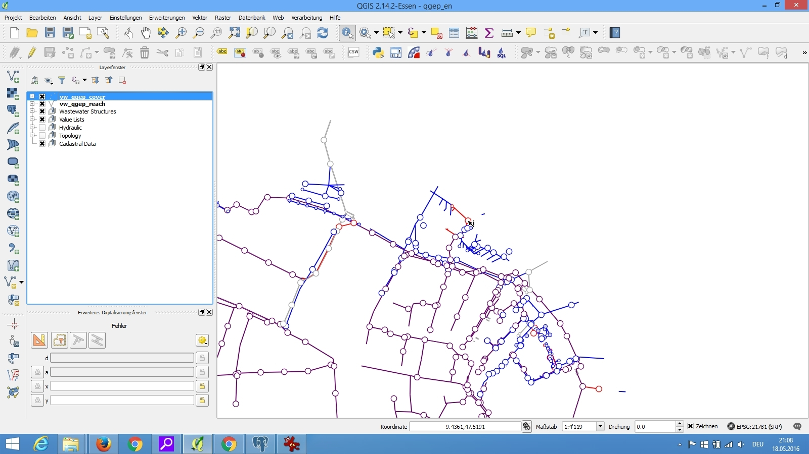
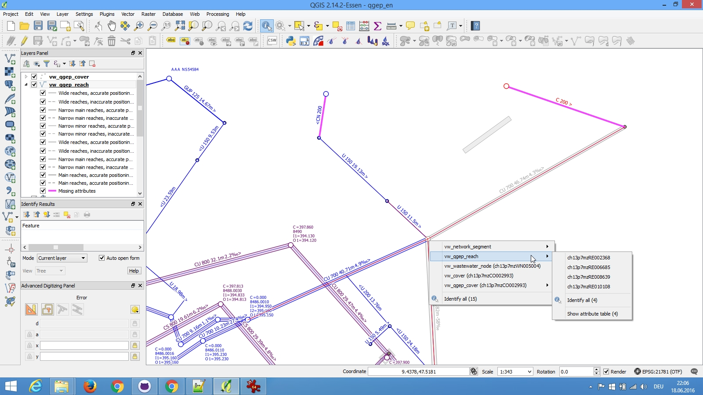

2.3.1. Modification de données existantes¶
Voici un guide pour la modification de données existantes dans QGEP.
2.3.1.1. Projet Demo¶
Assurez-vous d’avoir bien importé le projet demo dans pgAdminIII (voir le chapitre Initialisation de la base de données)
Ouvrez le projet demo en vous rendant dans le menu général QGIS et en pressant Projet –> Ouvrir ou tout simplement en pressant sur les touches “CTRL” + “O” simultanément.

Identifiez-vous à la base de données
Vous devriez maintenant avoir le projet démo chargé

Le projet consiste en différentes couches. Choisissez les couches à éditer selon votre tâche.
2.3.1.2. Couches¶
QGEP possède différentes couches prédéfinies:
2.3.1.2.1. Couche vw_qgep_wastewater_structure¶
La vue vw_qgep_wastewater_structure permet d’éditer les éléments de type point. Ce sont les structures d’assainissement tels que les chambres, les structures spéciales, les installations d’infiltration et les exutoires (wwtp_structures, qui est aussi une structure d’assainissement, n’est pas encore supporté).

2.3.1.2.2. Couche vw_qgep_reach¶
La vue vw_qgep_reach* permet d’éditer les éléments de type ligne du réseau d’assainissement (conduites / channels).
2.3.1.2.3. Couche Waste water structures¶
Cette couche contient différentes sous-couches en relation avec les structures d’assainissement. Elle contient aussi les liens avec les événements de maintenances et la table organisationnelle (ou sont stockés propriétaire, propriétaire des données, etc.)
2.3.1.2.4. Couche liste de valeurs¶
ici vous trouverez différentes liste de valeurs en relation avec les classes du réseau d’assainissement.
2.3.1.2.5. Couche hydraulique¶
Cette couche permets de sélectionner et éditer les nœuds du réseau. Sélectionnez la couche et utilisez l’outil Identifier une entité pour cliquer sur un nœud et faire apparaître ses informations.
2.3.1.2.6. Couche Topologie¶
Ici vous pouvez trouver toutes les informations relatives à la topologie du réseau.
2.3.1.3. Changer les attributs des éléments de type point (chambres / structure spéciales)¶
Pour changer les attributs, commencez par sélectionner la couche vw_qgep_wastewater_structure et passez en mode d’édition.
Ou alors utilisez l’outil d’assistance QGEP Wizard et cliqez sur Start Data Entry*.
Ensuite utilisez l’outils Identifier une entité et double-cliquez sur l’élément que vous voulez modifier.

Le formulaire vw_qgep_wastewater_structure s’ouvre.

Dans le premier onglet, vous pouvez changer les attributs les plus communs
Pour modifier les attributs de tables liées aux structures d’assainissement (e.g. les couvercles), sélectionnez l’onglet correspondant. Des attributs additionnels peuvent être édités selon le type de structures (structure spéciale, chambre).
L’onglet couvercles permets aussi d’ajouter des couvercles additionnels.
To add a second cover in this part is not recommended, because you can not define the geometry of the new point.
Dans l’onglet Parties structurelles, vous pouvez ajouter des éléments tels que des chemins d’accès aux ouvrages, des protections contre le refoulement, des cunettes de débit de temps sec, etc...

Dans l’onglet Wastewater nodes parts, vous pouvez éditer ou ajouter tous les attributs de cette classe ou ajouter un second élément.
To add a second wastewater node in this part is not recommended, because you can not define the geometry of the new point.

2.3.1.4. Modification des attributs des éléments linéaires (canalisations, conduites)¶
Pour changer les attributs, commencez par sélectionner la couche vw_qgep_wastewater_structure et passez en mode d’édition.
Ensuite utilisez l’outils Identifier une entité et double-cliquez sur l’élément que vous voulez modifier.
Le formulaire de la couche vw_qgep_reach s’ouvre.

Dans le premier onglet vous pouvez changer les attributs les plus communs.
Pour modifier les attributs des tables en relation (e.g. point de conduites), sélectionnez l’onglet correspondant.

2.3.1.5. Modification des attributs des éléments hydrauliques¶
En faisant un clique droit sur un élément avec l’outil Identifier une entité permets d’afficher la sélection de tous les objets existants.

Vous pouvez sélectionner l’objet que vous voulez. Cela va ouvrir le formulaire correspondants ou vous pourrez consulter les informations lié à l’objet.
2.3.1.6. Adding additional covers and nodes to an existing wastewater structure¶
The description is for an additional cover.
- Be sure to have the relation between vw_cover (field fk_wastewater_structure) and vw_qgep_wastewater_structure (field obj_id) in your project properties / relations.
- Define in layer vw_cover / properties / fields the field fk_wastewater_structure as value relation

- Start editing vw_cover and add the new cover
- In the form you find behind the field fk_wastewater_structure a button to connect the new cover to an existing wastewater structure

2.3.1.7. Sauvez les modifications¶
Cliquez sur sauvez et ensuite désactivez le mode d’édition ou tout simplement cliquez sur Stop data entry si vous avez travaillé avec l’assistant de saisie de données QGEP, le wizard.
..* TO DO:
- Changing relations (Verknüpfungen ändern)
- Change ws_type (Subklasse eines Abwasserbauwerkes ändern (ObjektID ändert dann auch!))
- Split channels into different reaches (Kanäle unterteilen)
Link to the Homepage of the Swiss Waste Water Association - Datamodel VSA-DSS: